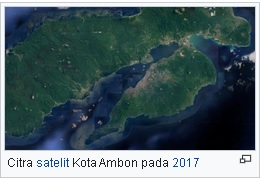
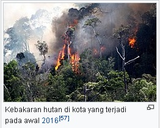

Kota Ambon terletak di sebelah selatan dari Pulau Ambon dengan luas keseluruhan sebesar 377 km2 atau dua
perlima dari luas Pulau Ambon. Luas ini terdiri dari luas daratan sebesar 359,45 km2 dan perairan sebesar
17,55 km2 dengan garis pantai sepanjang 98 km. Kota ini dibelah oleh Teluk Ambon sehingga berada dalam
lengkungan yang berbentuk huruf U. Sisi timur kota berbatasan dengan Sala Hutu, Maluku Tengah; selatan
dengan Laut Banda; dan barat dan utara dengan Leihitu, Maluku Tengah.
Kota ini mencakup 46,38% dari seluruh tanah Pulau Ambon. Menurut teleponnya, Kota Ambon mencakup wilayah
kode telepon +62 911, sedangkan Kota Ambon mencakup wilayah kode pos 97129–97237.
 Kota Ambon memiliki luas daratan 359,45 km2. Karena letaknya di pulau busur vulkanis, 73% wilayah kota merupakan daerah perbukitan dengan kemiringan lereng terjal (30–45°) hingga sangat terjal (>45°) dan hanya sekitar 17% dari wilayah daratannya yang dapat dikelompokkan datar atau landai dengan kemiringan kurang dari 30°. Kota Ambon merupakan pusat pelabuhan, pariwisata, dan pendidikan bagi wilayah Kepulauan Maluku. Dari antara beberapa pelabuhan di kota, Pelabuhan Yos Sudarso di kota ini menjadi pelabuhan utama kota dan provinsi. Kota disebut sebagai pusat pariwisata karena menawarkan beragam jenis wisata, mulai dari alam, budaya, bahari, hingga kuliner. Keberadaan Ambon sebagai pusat pendidikan bisa dilihat dari penyelenggaraan pesta pendidikan, rata-rata lama sekolah yang tinggi, dan ketersediaan sarana dan prasarana pendidikan sejak zaman penjajahan. Kota ini pun memiliki PDRB terbesar dan PDRB per kapita tertinggi di Maluku. Selain menyandang gelar sebagai kota musik Indonesia, Ambon merupakan kota pertama di Asia Tenggara yang dianguerahi sebagai Kota Musik Dunia oleh UNESCO.
Secara astronomis, Kota Ambon terletak di 3° 34' 8,40"–3° 47' 42,00" LS dan 128° 1' 33,60"–128° 18' 3,60" BT. Ambon beriklim hutan hujan tropis (Köppen: Af), serupa dengan iklim sebagian besar wilayah Indonesia dan Maluku Tengah. Iklim hutan hujan tropis Ambon dapat dilihat dari banyaknya hutan hujan tropika di kota yang sempat terbakar berkali-kali, namun muncul kembali karena kuatnya pengaruh iklim Af dan dorongan curah hujan yang tinggi. Hujan mengalami kepuncakannya di kota pada akhir Juni maupun sepanjang Juni hingga Juli, bahkan mengalahkan curah hujan Bogor, kota hujan yang hanya 442 mm. Rata-rata tertinggi suhu tertinggi yang terekam adalah 30,9°C, sedangkan rata-rata terendah suhu terendahnya 23 °C.